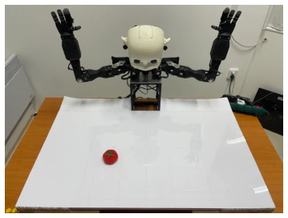
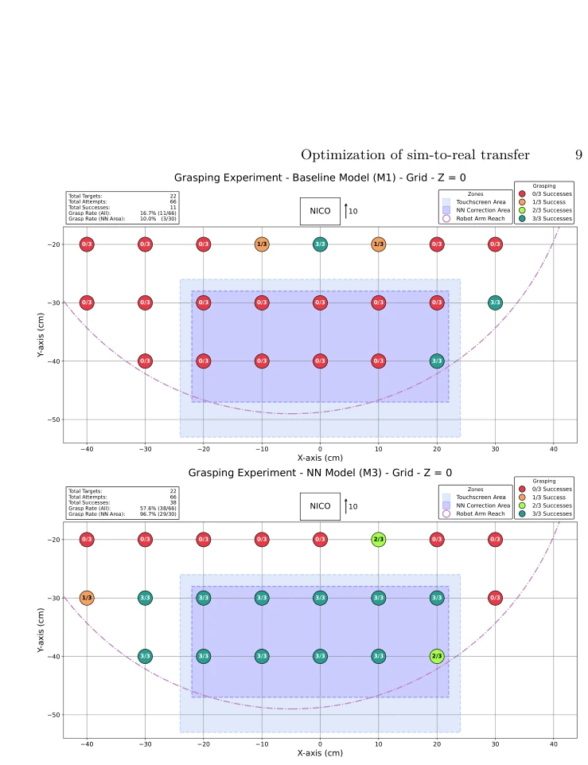
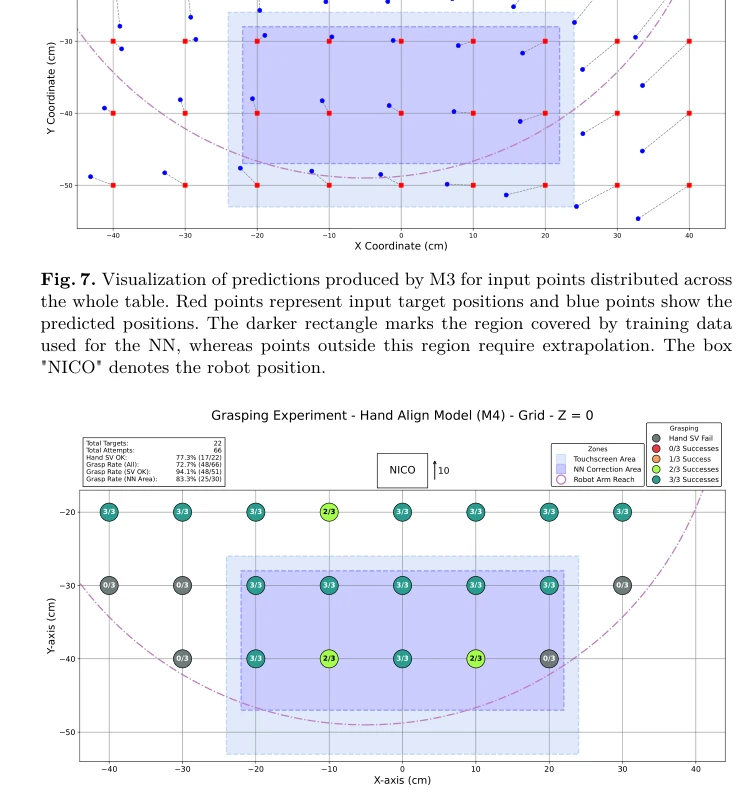
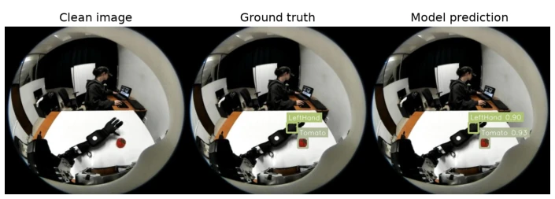
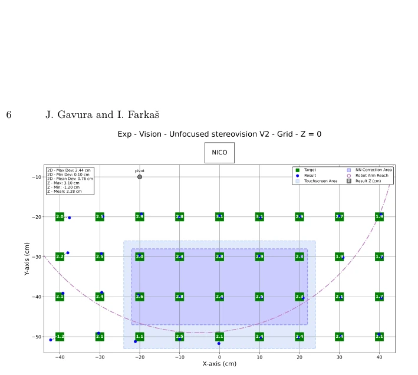
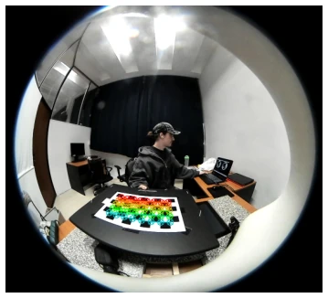
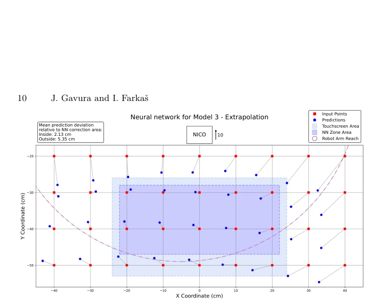

This paper develops a 'budget-friendly' grasping scheme for the NICO robot, eliminating the need for expensive RGB-D cameras by relying solely on built-in fisheye lenses and calibration models. The highlight is indeed extending the previous 2D point-touch calibration to grasping; the M3 model performs exceptionally well within the calibration area, with a 96.7% success rate that is impressive. However, there are also significant drawbacks: M3 becomes unstable ('floats') outside the calibration area, exhibiting poor extrapolation capabilities; M4's visual feedback, although covering a wide range, relies on stereo vision for hand localization, becoming ineffective when the background is distant, thereby compromising the overall success rate. Overall, it is a typical 'engineering compromise' work, trading algorithm for hardware, suitable for laboratories with limited budgets, but generalization remains uncertain, as stereo vision still struggles with human hand detection and suffers from overheating drift issues. Although this low-cost Sim-to-Real path is practical, its robustness in complex scenarios still requires verification, and it cannot be expected to directly replace high-end solutions.
The core pain point of humanoid robot grasping lies in the Sim-to-Real Gap, where perfect actions in simulation often fail in reality due to mechanical errors and sensor noise. Although deep learning grasping methods such as GraspNet-1Billion [3] and Dex-Net 4.0 [12] perform well, they rely on large amounts of data and specialized sensors. Previous work [6] solved the 2D point-touch problem using tactile calibration, but grasping involves multiple stages such as detection, localization, and IK, where error accumulation is more severe. Existing methods mostly rely on RGB-D cameras [2] or motion capture [13], incurring high costs. This paper aims to achieve Sim-to-Real transfer using a low-cost solution (built-in fisheye camera + calibration), solving the leap from 'pointing to' to 'grasping steadily'. Especially for resource-constrained humanoid platforms, how to improve grasping success rates without increasing hardware burden is the key question this paper attempts to answer.

Fig. 1. NICO robot setup equipped with a paper grid used as ground truth for object placement in the grasping experiments.
The overall Pipeline is divided into three stages: perception, calibration, and control. First, YOLO detects objects and hands (YOLO12s), combined with stereo vision to calculate 3D positions. Second, three calibration models are introduced: M1 linear mapping, M2 partial nonlinear MLP, M3 full nonlinear NN, mapping real coordinates back to simulation coordinates. Finally, the M4 visual feedback model does not rely on calibration, but iteratively adjusts IK targets to align the hand with the object. Additionally, there are task-specific calibrations (Z-axis and Yaw). Data flow: Camera image -> YOLO detection -> Stereo disparity -> Robot coordinate system -> Calibration model -> IK solving -> Execution. The innovation lies in extending tactile calibration to grasping, and designing a visual feedback loop without external devices. Specifically, the M3 model uses a neural network to predict 3D target positions, while M4 continuously corrects hand posture through visual servoing until the distance to the object is less than 1 cm. This hybrid strategy utilizes the accuracy of calibration while retaining the robustness of visual feedback, but also introduces the problem of stereo vision sensitivity to background distance.
Experiments used a plush tomato tested at 22 grid points, with 3 attempts per point. Comparing the four models M1-M4. M1 baseline success rate was only 16.7%. M3 reached 96.7% within the calibration area, but only 57.6% in the full area, with poor extrapolation. M4 visual feedback was 72.7% in the full area, but failed when hand localization was inaccurate (background far). It was found that stereo vision has overheating drift, requiring fixed head position. The conclusion is that calibration models are strong locally, visual feedback is strong in generalization, but limited by hand localization accuracy. Specific data shows M3 performs excellently in the calibration area, but prediction bias increases outside the area; M4, although having a high overall success rate, relies on hand localization accuracy; when the background is too far, stereo vision will overestimate the hand position, leading to grasping failure. This reveals the limitations of low-cost stereo vision in human hand detection.

Fig. 6. Visualization of 2D grasping success rate for grid-based targets spread across the whole reachable area using the baseline model M1 (top) and NN correction model M3 (bottom). The plot shows the number of successful grasp attempts for each target position, together with the touchscreen area, NN correction area, and NICO arm reach. The box "NICO" denotes the robot position (to be shifted 10 cm up).

Fig. 8. Visualization of 2D grasping success rate for grid-based targets spread across the whole reachable area using the visual feedback hand alignment model. The plot shows the number of successful grasp attempts for each target position. Gray targets indicate positions where stereo vision substantially overestimated the hand position.
其他图片Other Figures

Fig. 2. Example of object detection results using the YOLO12s model. Left: the original image; Middle: ground truth annotations from the dataset; Right: predictions by the trained model with confidence scores.

Fig. 4. Evaluation of the corrected stereovision localization method on a 9×4 grid of target positions. The unfocused version uses the initial head pose, where NICO looks toward the center of the table. Green squares indicate target positions, blue points show the estimated positions, and the values inside the green squares represent the estimated z coordinate in centimeters. The pivot point indicates the direction toward which the predictions are shifted during correction.

Fig. 3. Example of a stereo-vision calibra- tion image with detected chessboard cor- ners and their projected positions.

Fig. 7. Visualization of predictions produced by M3 for input points distributed across the whole table. Red points represent input target positions and blue points show the predicted positions. The darker rectangle marks the region covered by training data used for the NN, whereas points outside this region require extrapolation. The box "NICO" denotes the robot position.